| Year | Cost1 | Benefit1 | Cost0 | Benefit0 | Net cost (FV) | Net benefit (FV) | Net cost (PV) | Net nenefit (PV) |
|---|---|---|---|---|---|---|---|---|
| 0 | 70000 | 0 | 0 | 30000 | 70000 | -30000 | 70000 | -30000 |
| 1 | 70000 | 0 | 0 | 30000 | 70000 | -30000 | 67961 | -29126 |
| 2 | 70000 | 0 | 0 | 30000 | 70000 | -30000 | 65982 | -28278 |
| 3 | 70000 | 0 | 0 | 30000 | 70000 | -30000 | 64060 | -27454 |
| 4 | 0 | 80000 | 0 | 50000 | 0 | 30000 | 0 | 26655 |
| 5 | 0 | 82800 | 0 | 51750 | 0 | 31,050 | 0 | 26784 |
| 6 | 0 | 85698 | 0 | 53561 | 0 | 32137 | 0 | 26914 |
| 7 | 0 | 88697 | 0 | 55435 | 0 | 33262 | 0 | 27045 |
| … | … | … | … | … | … | … | … | … |
| Total | 280000 | 6764022 | 0 | 4347514 | 280000 | 2416508 | 268003 | 1058746 |
Session 5
Economic evaluation in Healthcare
Wu Zeng, MD, PHD, Georgetown University
Outline
Outline of the session
- What is economic evaluation?
- Why is it important in healthcare?
- Type of economics evaluation
- cost-of-illness studies
- cost-benefit analysis
- cost-effectiveness analysis
- Approaches to perform a cost-effectiveness analysis
- Decision tree model
- Markov model
What is economic evaluation?
Economic evaluation is a comparative analysis of alternative courses of action in terms of both their costs and consequences.
- Definition: Drugs and other technologies are assessed for use and/or for a reimbursement price by looking at incremental health-related effects and costs relative to existing treatments.
It is a tool to help decision-makers allocate scarce resources efficiently to maximize health benefits within the budget.
Budget constraints
Optimize available of resources
Key concept 1: Marginal benefit equals to marginal cost
Key concept 2: The resources used for an individual would results in that the resource could not be used for others
Why is it important to measure the valuein healthcare?
Cancer immunotherapy drug Keytruda™ costs $150,000 per year
Economic evaluation approaches
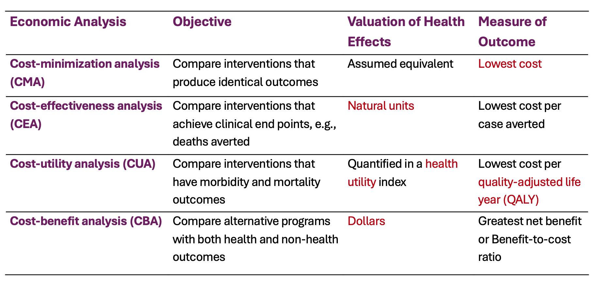
Economic evaluation approaches continue…
Type of economic evaluation
Cost of illness studies
Purpose: Estimate the economic burden of a diseases or health conditions, expressed disease burden in monetary terms (what is the economic burden of diabetes in the US? What is the economic burden of Covid-19 in the US? etc.)
- \(\text{Cost of illness}\) = Cost per episode * Number of episodes + cost per admission * number of admissions + loss of productivity per death * deaths
Approaches: Convert morbidity and mortality into monetary terms, including
- direct costs (medical costs or non-medical costs)
- indirect costs (productivity loss)
- intangible costs (pain and suffering)
Cost-of-illness of dengue in Puerto Rico 1
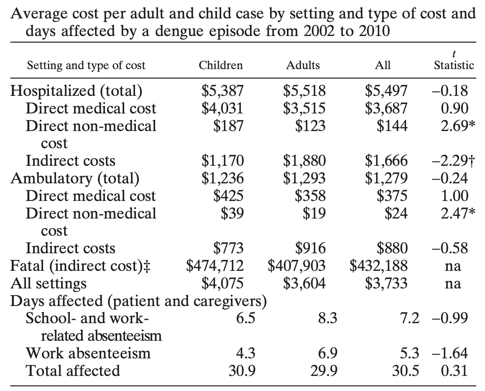

Cost-benefit analysis (CBA)
Purpose:
- Compare the costs and benefits of an intervention in monetary terms (e.g., what is the benefit of a new drug in monetary terms? What is the cost of a new drug in monetary terms? etc.)
Requirement:
- Identify the costs and benefits of the intervention in monetary terms
- Calculate the net benefit (benefit minus cost) or benefit-cost ratio (benefit divided by cost)
- Compare the net benefit or benefit-cost ratio of the intervention with that of alternative interventions
Cost-benefit analysis
Cost-benefit analysis (CBA) continue…
Converting future value to present value using a discount rate
- Benefit and the cost can be in the future, and we need to discount the future benefit and cost to present value using a discount rate (e.g., 3% per year)
- Present value (PV) of future benefit or cost can be calculated using the following formula:
- \(PV = \frac{FV}{(1+r)^t}\), where FV is future value, r is discount rate, and t is time in years
- Selection of discount rate
- US often uses 3% per year for both costs and benefits
- UK often uses 3.5% per year for both costs and benefits
Example: CBA
Example of cost-benefit analysis (CBA)
Estimation of the cost benefit of coming to Georgetown University to pursue a bachelor degree vs. working in the US for 4 years after high school graduation.
Assumptions
- Tuition and fees: $50,000 per year
- Living expenses: $20,000 per year
- Opportunity cost of not working: $30,000 per year
- Total cost of attending Georgetown University for 4 years: $400,000
- Expected salary after graduation: $80,000 per year
- Expected salary without a degree: $50,000 per year
- Expected salary increase due to degree: 3.5% per year
- Time horizon: 40 years (from age 22 to age 62)
- Discount rate: 3% per year
Estimation
Cost-benefit ratio = $268,003/1,058,746 = 1/3.95 $
Cost-effectiveness analysis (CEA)
Incremental cost-effectiveness ratio (ICER)
Numerator: Difference between cost of new drugs and that of alternative under study
Denominator: Difference of health outcomes (Effectiveness) of new drugs and alternative
\(ICER = \frac{{Cost_{New Drug}}-Cost_{Status Quo}}{Effectiveness_{New Drug}-Effectiveness_{Status Quo}} = \frac{\Delta Cost}{\Delta Effectiveness}\)
What is the meaning of ICER?
Price to pay in order to gain 1 unit increase in the health benefit
Steps to perform a cost-effectiveness analysis (CEA)
- Define the perspective of the analysis (e.g., societal, healthcare system, payer, patient)
- Define the time horizon of the analysis (e.g., short-term, long-term)
- Define the alternative interventions to be compared (e.g., new drug vs. standard treatment)
- Identify the costs and effectiveness of each alternative intervention
- Calculate the incremental cost and incremental effectiveness of the new drug compared to the standard treatment
- Compare the ICER against the threshold value
- Perform sensitivity analysis to assess the robustness of the results
Define perspectives of study
Societal perspective
Include all costs and benefits, regardless of who incurs the costs or receives the benefits
Healthcare system perspective
Include only costs and benefits that are relevant to the healthcare system (e.g., costs of drugs, hospitalizations, and medical procedures)
Payer perspective
Include only costs and benefits that are relevant to the payer (e.g., insurance company, government)
Examine the costs
Components of costs
Cost of intervention
Savings from the interventions
cost of side effects
Type of costs
- Direct costs: medical costs (e.g., drugs, hospitalizations, medical procedures) and non-medical costs (e.g., transportation, caregiver time)
- Indirect costs: productivity loss (e.g., lost wages, lost productivity due to illness or death)
Discount future costs
Effectiveness measures
- Common measures of health consequences
- Health outcomes
- Mortality (death rate) or morbidity (e.g. incidence, prevalence) or disability (Quality of life)
- Intermediate health outcomes
- Changes in the risk of ill-health (e.g. smoking, drinking, blood pressure reduction)
- Changes in the risk of ill-health (e.g. smoking, drinking, blood pressure reduction)
- Process measure (e.g. hospital stay)
- Composite measures
- Quality adjusted life years (QALYs)
- Disability adjusted life years (DALYs)
- Health outcomes
- Fatal cases
- Life years saved (LYs)
- Non-fatal cases
- Quality-adjusted life years (QALYs)
- Utility
- Duration of illness
- Quality-adjusted life years (QALYs)
Survival measures
- Life years saved (LYs)
- Survival rate
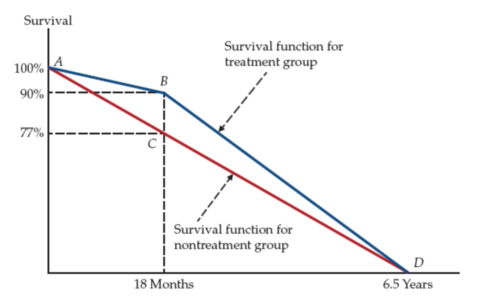
- LYs gains
- (ABC) = 1/2(0.90 − 0.77) × 1.5 = 0.0975 years
- (BCD) = 1/2(0.90 − 0.77) × 5 = 0.325 years
- Total = 0.0975 + 0.325 = 0.4225 years
Quality-adjusted life years (QALYs)
Some interventions may have a combination of multiple impact
Improve the duration of survival (mortality)
Reduce the risk of diseases (morbidity)
Improve the quality of life during the illness (quality of life)

QALYs continue…
Quality-adjusted life years (QALYs)
\(QALY = Q*LYs\), where Q is Quality of Life and LY is Life Years
\(\Delta QALYs = Q_{n}*LYs_{n} - Q_{s}*LYs_{s}\)
where n means new drugs and s standard treatment
A typical TB patient with has an average quality of life of 0.8 during the illness, and the TB symptoms last 6 months until the patient is fully recovered.
How many QALYs does the patient live during the illness?
How many QALYs saved per case if TB vaccine could avert the TB?
Calculation
Calculation of QALYs
\(QALY_s = Q_s*LYs_s = 0.8*\frac{6}{12} = 0.8*0.5= 0.4\)
\(\Delta QALYs = Q_{n}*LYs_{n} - Q_{s}*LYs_{s}\)
\(Q_{n}*LYs_{n} = 1*\frac{6}{12}=1*0.5=0.5\)
\(\Delta QALYs = 0.5-0.4=0.1\)
Quality of life measures
- Quality-adjusted life years (QALYs)
- 0 = death, 1 = perfect health
- Utility score can be measured using different methods, including
- Visual analog scale (VAS)
- Scale measures (EuroQol, SF-6D, HUI, etc.)
- Time trade-off (TTO)
- Standard gamble (SG)


Standard time trade-off offering 2 options:
Chronic health state for t years
Normal(Perfect) health for x years (where x is less than t),
Vary length of x until individual is indifferent between two options
Utility value of one year in chronic health state is x/t
Time trade-off example
A person with chronic pain would live for another 10 years. He/she will be indifferent between living for 10 years with chronic pain and living for 6 years with perfect health. What is his/her quality of life?
\[6/10 = 0.6\]
Standard gambling approach
You’re presented with two options:
Option A (Certainty): Live with a specific health problem (e.g., severe pain) for the rest of your life.
Option B (The Gamble): A chance (probability p) of achieving perfect health and a chance (1-p) of immediate death.
Finding Indifference: The probability p is adjusted until you’re equally happy with Option A as with Option B (you’re indifferent).
Calculating Utility: This indifference point helps calculate a utility score (U) for that health state, often using the formula: \(U = p \times 1 + (1-p) \times 0\), where 1 is perfect health and 0 is death.
Estimation Incremental Cost-effectiveness Ratio (ICER)
\[ICER = \frac{\Delta Cost}{\Delta QALYs}\]
Interpretation: The ICER is the price to pay in order to gain 1 unit increase in the health benefit (e.g., 1 QALY).
if ICER is $800 per QALY, is it cost effective in US?
What about in Afghanistan?
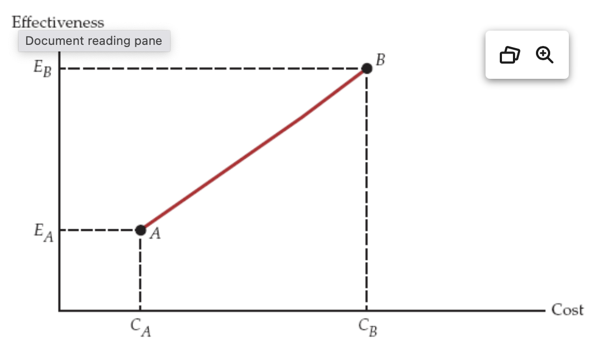
ICER for multiple interventions
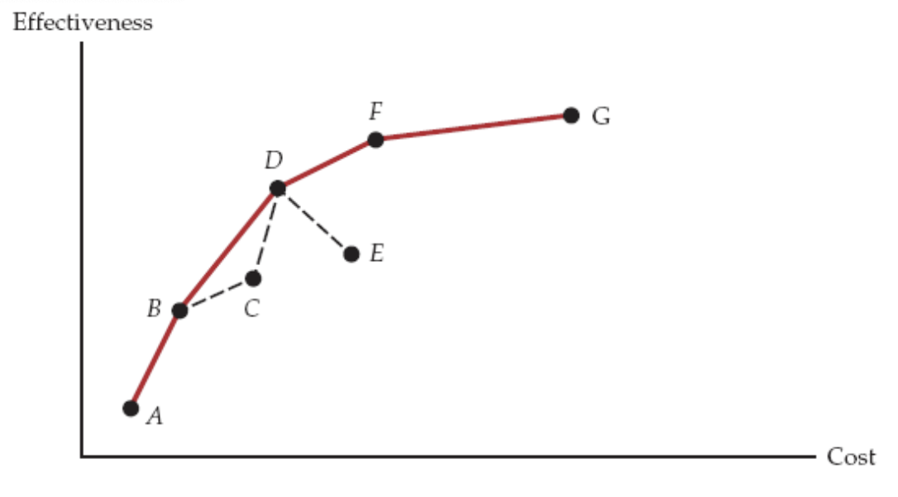
An hypothetical example
A dengue vaccine cost $20 per dose. Full vaccination a child under 9 years old requires 3 doses. The efficiency of the dengue vaccine was estimated to be 60%. The QALYs loss per dengue infection, on average was estimated to be 0.035.
The incidence of dengue in the country was estimated to be 2% among children under 9. Assuming that the treatment cost per dengue case is, on average, $200 per infection. What is the incremental cost-effectiveness ratio (ICER) of the dengue vaccine.
Calculation
\(\Delta Cost \text{ per person} = (20*3 + 100*0.02*0.4) - (0 + 100*0.02) = 58.8\)
\(\Delta QALY \text{ per person} = 2\%*0.035*0.6 = 0.00042\)
\(ICER = \frac{58.8}{0.00042} = 140,000\)
What does this number tell us? Is it worthwhile to deploy the vaccine to control dengue?
Compare ICER with threshold value

- Threshold value: The maximum amount of money that a society is willing to pay for a unit of health benefit (e.g., 1 QALY)
- Willness to pay (WTP) threshold value is often used as a benchmark to determine whether an intervention is cost-effective or not.
- GDP per capita is often used as a proxy for WTP threshold value.
- WHO Suggests
- < 1x GDP per capita: Highly cost-effective
- 1-3x GDP per capita: Cost-effective
- I use 1.5 x GDP per capita as the threshold value for my studies
Sensitivity analysis
- Sensitivity analysis is a method to assess the robustness of the results of a cost-effectiveness analysis (CEA) by varying the key parameters of the model (e.g., costs, effectiveness, discount rate, etc.) and examining how the results change.
- Types of sensitivity analysis
- One-way sensitivity analysis: Vary one parameter at a time and examine the impact on the results.
- Multi-way sensitivity analysis: Vary multiple parameters at the same time and examine the impact on the results.
- Probabilistic sensitivity analysis: Use probability distributions to model the uncertainty of the parameters and examine the impact on the results.
Decision tree model
- Suitable for short-term and non-repeated health outcomes
- Requirement
- Construct a decision tree model to represent the health outcomes and pathway of the alternative interventions
- Identify the probabilities of each health outcome and the cost and effectiveness associated with each outcome
- Calculate the expected cost and effectiveness of each alternative intervention
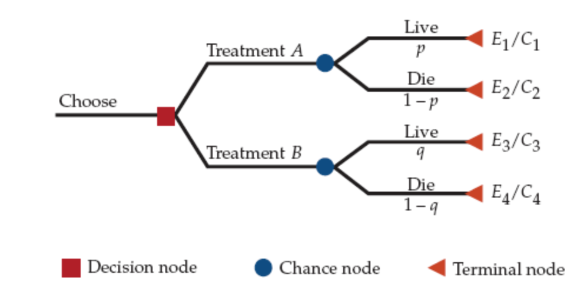
Example of decision tree model
Decision tree for CHW program (Effectiveness)
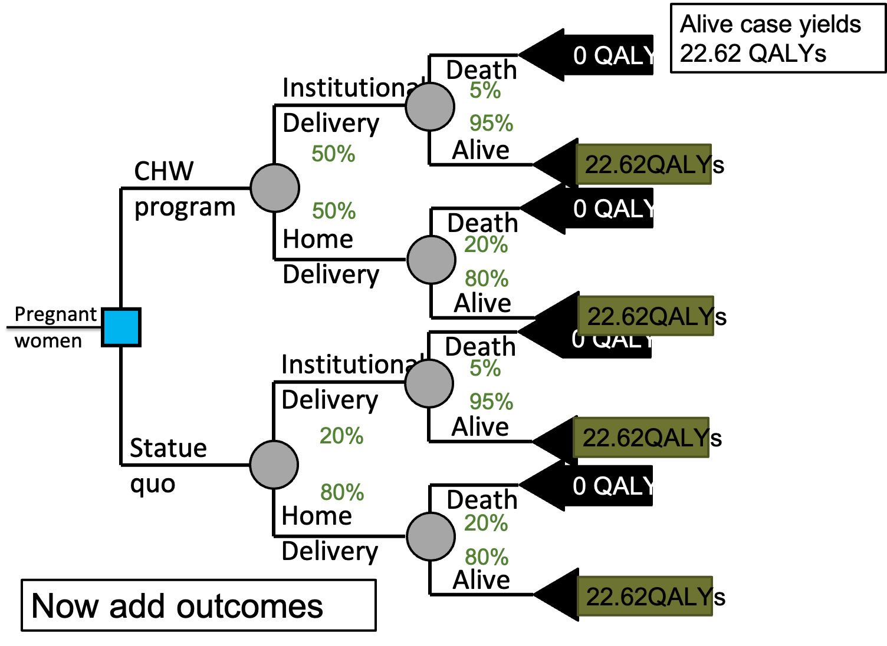
Decision tree for CHW program (Cost)
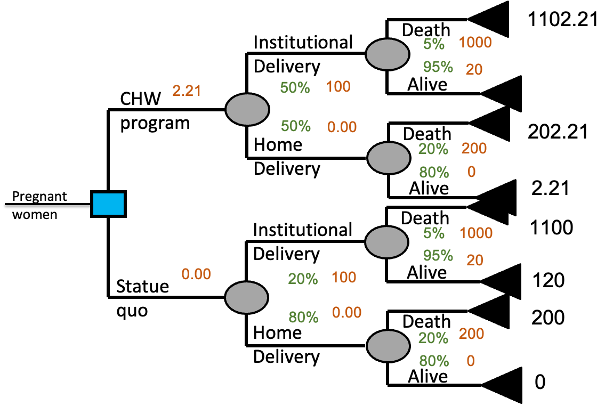
Average out & fold back
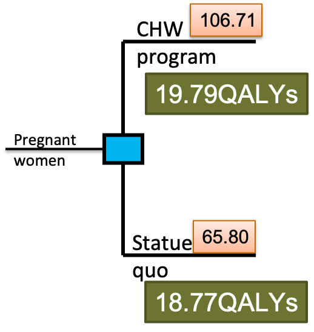
- The net cost per pregnant woman is
- $106.71 − $65.80 = $40.91
- Gained DALYs are
- 19.79 − 18.77 = 1.02
- ICER = $40.91 / 1.02 = $40.11/QALY
Markov model
- Suitable for long-term (chronic diseases) and repeated health outcomes (infectious diseases)
- Requirement
- Define the cycle length and time horizon for the model
- Construct a Markov model to represent the health states and pathway of transition among states
- Identify the transition probabilities of each health state
- Attach the cost and effectiveness (utility) associated with each state
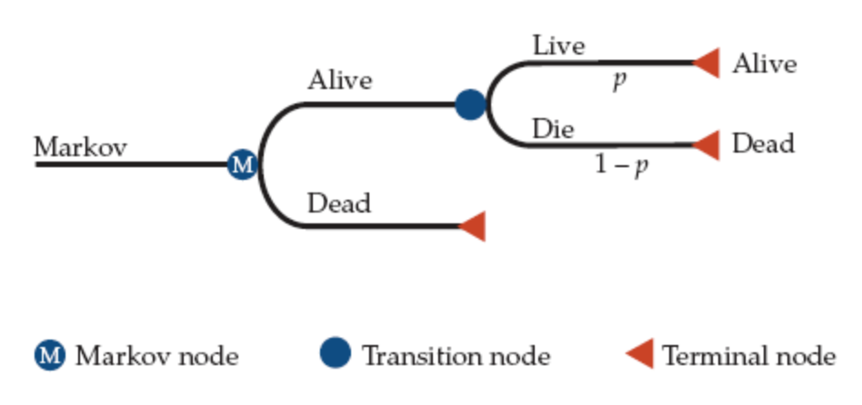
Issues of using CEA
Major issues in using CEA to value phmarceutical innovations
Ethical issue
Equity issue
Technical issues
No consensus on dimensions of effectiveness to be measured
The heterogeneity of willingness to pay
How to compare cost and effectiveness
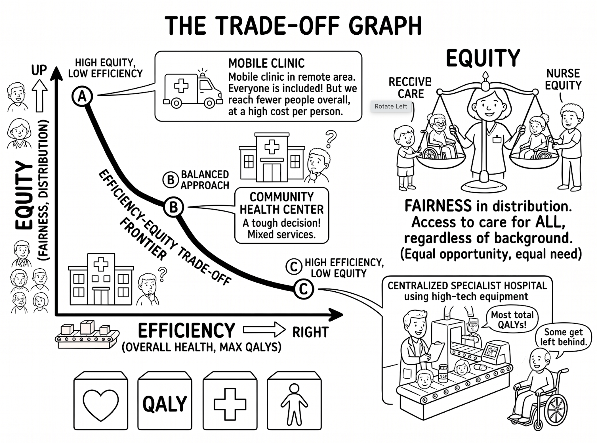
Summary
CEA has been widely used for valuing pharmaceutical innovation
CEA is also important instrument for valuing health services
There are many new developments in addressing the technical issues of CEA
CEA is NOT the only criterion for valuing pharmaceutical innovation
“CEA is not the only and ultimate evaluation tool!”
Questions and comments
Introduction to Health Economics | Fall 2026 | Session 5